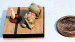
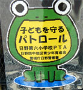
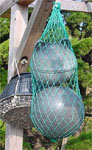

新型カエル見ユ！緊急電届く！ 【帝都発=カエル空挺隊同志記者】0126新型カエル見ユ。「かえる模型」ナル零細ガレージショップノ製品ナリ、近日発売サレルモノノゴトシ。ワレ監視を継続ス。ワレラ一億総カエルノ先駆ケタラム。カエル空挺隊実は私、「かえる模型」主催者ではありませんが、当人と同じカエラーを自認する者として、代理投稿させていただきました。「かえる模型」の現在の主力商品は、Ｍ３リー、Ｍ４シャーマンのディテールアップパーツであります（都内模型店にて発売中）。このたび、その名にふさわしくかえるの模型が加わりました。サイズは隣の十円玉を参考にしてください。超絶技巧、でもカワイイ奴です。販売時期等、詳細は未定ですが随時お知らせしたいと思いますので、よろしくお願いいたします。 【全国かえる奉賛会】ぐおーっ！大王の琴線に触れるこの投稿形式はいったい何ものなんだあああああ。しかも、かえる模型の車体は、なんと鬼畜米軍戦車の車体を流用しているとは！戦利品を有効利用しているということか。次回はぜひ、帝国陸軍の三菱九七式中戦車の車体や、ポルシェ博士が設計した、動くだけで破損するディーゲル戦車の車体ともとに増産につとめてほしいぞ！
今後もカエル哨戒任務を全うされたし。空挺隊員の続報を待つ！
 カエルパトロールで警戒万全！【帝都発まさえ同志記者】わたしの近所の小学生は「カエルパトロール」なるＰＴＡ団体に守られてる模様です。学校の校門や、ＰＴＡのママさんの自転車にこんなマスコットが貼りついています。いや〜カエルに守ってもらえるなんてうらやましいかぎりです！
【全国かえる奉賛会】なにかと物騒な世の中だが、カエルパトロールに守られていたら安心だああ。
蛙のTシャツを捜索中！【日本発純かえる同志記者】ヤフーで蛙のTシャツと検索してここにHPにたどりつきました。私はぜひ手に入れたいTシャツがあって探し回っています。今から５、６年ほど前に街でたまたま見かけたTシャツがあります。たしか半そでだった気がするのですが・・・違ってたらごめんなさい。前も後ろも横も全てが蛙のデザインのシャツです。 Tシャツの前身ごろは蛙の前から見た絵。後ろ身ごろは蛙を後ろから見た絵。横は（そでの部分）たしか蛙の腕になってた記憶が・・・・。蛙の絵は本物のような蛙のデザインでした。ベルツノか牛蛙か・・・・。そのTシャツを見かけた年は、またバイト先のお客様が着てたのをみかけました。 自作ではないような作りでした。１度みたらインパクトが残るTシャツでした。しかし２回ともじっくりTシャツを見ることが出来ずに記憶もあいまいですが・・・・。もしそのようなTシャツを知ってたら教えていただきたいと思ってます。
【全国かえる奉賛会】ええーっ！このシャツがあったら、新聞でも紹介したいぞーっ！情報を待つ！
カエルに見えたらカエラーだ 【福岡発すみ同志記者】壱岐に旅行にいったときのことです。バスの中から『あ！カエルがいるよーっ！』と思い、バスを降りて、そばまで駆け寄ったのですが、確かにカエルでした。でも、友達は『それは、カエルじゃなくて、浮き袋だよーっ！』というんですけど、どうみてもカエルですよねー。網に入ってて、こっちをじっとみているんです。かわいーっ！！
【全国かえる奉賛会】そうだああああ！カエルに見えるのが自然だよね。すべてのものがカエルに見えてくる。これこそ、カエラーの証明なので、今回から、すみちゃん様は、すみ同志記者となります。
池田町にてカエルの２４の瞳の像発見！【香川発ＲＯＫ同志記者】先日小豆島へ旅行しましたら池田町にてカエルの２４の瞳の像を発見しました。バスツアーでしたので一瞬でしたので写真は取れませんでした。残念。どこかに記録されていますか？さらに北海道池田町にカエルマークつきのワインを売っています。町民用ということで渋みのあるものです。池田町は全国にいくつもありカエルを大切にしているようです。
【全国かえる奉賛会】これも画像が見たいなあ！
カエル絵本を発見！【福岡発しげやん同志記者】書店で『あなたと出逢えてよかったぁ』という本を発見しました。やのともこさんという人がかいた絵本です。かえるの母が、新たにさずかった、わが子を愛する話なのです。絵がかわいいです。でも、カエルの子供って、おたまだとおもうんですが、ここでは最初からカエルの子供として描かれています。おたまの時代はなかったのでしょうか。
投稿採用者に武功カエル徽章を授与！ |

かえる古新聞過去に取り上げた記事を見出し付きで一覧したい人は、ここをクリック◆創刊号を見る◆先週号を見る◆話題の号を見る◆かえる新聞の昔を読む
|
私も入っています。。全国かえる奉賛会
大王様に会うには、このバナーをクリック。ずっと奥に写真館があるぞ。全国かえる奉賛会に入会するには、自分のホームページのどこかに、下の部分を追加するとバナーがリンク付きで表示されるぞ。どんどん入会しましょー |


|